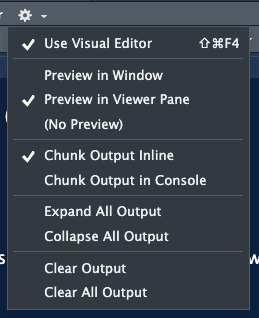
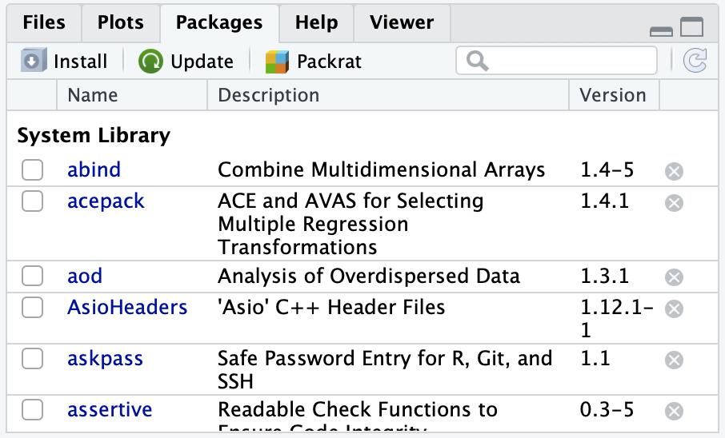

here() starts at /Users/wakim/Library/CloudStorage/OneDrive-OregonHealth&ScienceUniversity/Teaching/Classes/BSTA_500_25Su/BSTA_500_25Su_siteR05: Quarto in R
Saving your work with Quarto

Example: creating an html file
.qmd file

.html output

Quarto = .qmd file = Code + text
We can take .qmd files containing code (R and other types) + plain text (like we might make in Word), and then to it other formats (html, pdf, Word, etc) that nicely display the code and text!
Basic Quarto example

Before we get further in .qmd files
- Let’s make sure we all have Rstudio open
- And then open your
EPI_525_F24project!
Steps for making a Quarto file
- Create a Quarto file (
.qmd) - Edit a Quarto file (
.qmd) - Save the Quarto file (
.qmd) - Create html file
1. Create a Quarto file (.qmd)
Two options:
- click on File \(\rightarrow\) New File \(\rightarrow\) Quarto Document…\(\rightarrow\) OK,
- or in upper left corner of RStudio click on
 \(\rightarrow\)
\(\rightarrow\) 
Pop-up window selections:
- Enter a title and your name
- Select
HTMLoutput format (default) - Engine: select
Knitr - Editor: Select
Use visual markdown editor - Click
Create

2. Edit a Quarto file (.qmd)
- After clicking on
Create, you should then see the following in your editor window:
- You can try editing the text or changing the code!
- Make sure you are only editing at the “Quarto” header and below
3. Save the Quarto file (.qmd)
- Save the file by
- selecting
File -> Save, - or clicking on
 (towards the left above the scripting window),
(towards the left above the scripting window), - or keyboard shortcut
- PC: Ctrl + s
- Mac: Command + s
- selecting
- You will need to specify (Use what we learned in last lesson!!)
- a filename to save the file as
- ALWAYS use .qmd as the filename extension for Quarto files
- the folder to save the file in
- Hint: this will probability go under “R_activities” and with a name like “R05_Quarto-work.qmd”
- a filename to save the file as
4. Create html file
We create the html file by rendering the .qmd file.
Two options:
- click on the Render icon at the top of the editor window,
- or use keyboard shortcuts
- Mac: Command+Shift+K
- PC: Ctrl+Shift+K
- A new window will open with the html output.
- You will now see both .qmd and .html files in the folder where you saved the .qmd file.
Note
- The template .qmd file that RStudio creates will render to an html file by default.
- The output format can be changed to create a Word doc, pdf, slides, etc.
Tip: changing the render view
- You can change where your
.htmlfile pops up - I have it set to open in the “Viewer Pane” in the bottom right

.qmd vs. its .html output
.qmd file
.html output
R Packages

R Packages
A good analogy for R packages is that they are like apps you can download onto a mobile phone:
- Packages contain additional functions and data
Installing packages
Two options to install packages:
install.packages()or- The “Packages” tab in Files/Plots/Packages/Help/Viewer window
install.packages("dplyr") # only do this ONCE, use quotes- Only install packages once (unless you want to update them)
- Installed from Comprehensive R Archive Network (CRAN) = package mothership

Video on installing packages
- Danielle Navarro’s YouTube video on Installing and loading R packages: https://www.youtube.com/watch?v=kpHZVyDvEhQ
- If you want to get more information on packages
Load packages with library() command
- Tip: at the top of your Rmd file, create a chunk that loads all of the R packages you want to use in that file.
- Use the
library()command to load each required package. - Packages need to be reloaded every time you open Rstudio.
library(dplyr) # run this every time you open Rstudio
Attaching package: 'dplyr'The following objects are masked from 'package:stats':
filter, lagThe following objects are masked from 'package:base':
intersect, setdiff, setequal, union- You can use a function without loading the package with
PackageName::CommandName
dplyr::arrange(iris, Petal.Width) # what does arrange do? Sepal.Length Sepal.Width Petal.Length Petal.Width Species
1 4.9 3.1 1.5 0.1 setosa
2 4.8 3.0 1.4 0.1 setosa
3 4.3 3.0 1.1 0.1 setosa
4 5.2 4.1 1.5 0.1 setosa
5 4.9 3.6 1.4 0.1 setosa
6 5.1 3.5 1.4 0.2 setosa
7 4.9 3.0 1.4 0.2 setosa
8 4.7 3.2 1.3 0.2 setosa
9 4.6 3.1 1.5 0.2 setosa
10 5.0 3.6 1.4 0.2 setosa
11 5.0 3.4 1.5 0.2 setosa
12 4.4 2.9 1.4 0.2 setosa
13 5.4 3.7 1.5 0.2 setosa
14 4.8 3.4 1.6 0.2 setosa
15 5.8 4.0 1.2 0.2 setosa
16 5.4 3.4 1.7 0.2 setosa
17 4.6 3.6 1.0 0.2 setosa
18 4.8 3.4 1.9 0.2 setosa
19 5.0 3.0 1.6 0.2 setosa
20 5.2 3.5 1.5 0.2 setosa
21 5.2 3.4 1.4 0.2 setosa
22 4.7 3.2 1.6 0.2 setosa
23 4.8 3.1 1.6 0.2 setosa
24 5.5 4.2 1.4 0.2 setosa
25 4.9 3.1 1.5 0.2 setosa
26 5.0 3.2 1.2 0.2 setosa
27 5.5 3.5 1.3 0.2 setosa
28 4.4 3.0 1.3 0.2 setosa
29 5.1 3.4 1.5 0.2 setosa
30 4.4 3.2 1.3 0.2 setosa
31 5.1 3.8 1.6 0.2 setosa
32 4.6 3.2 1.4 0.2 setosa
33 5.3 3.7 1.5 0.2 setosa
34 5.0 3.3 1.4 0.2 setosa
35 4.6 3.4 1.4 0.3 setosa
36 5.1 3.5 1.4 0.3 setosa
37 5.7 3.8 1.7 0.3 setosa
38 5.1 3.8 1.5 0.3 setosa
39 5.0 3.5 1.3 0.3 setosa
40 4.5 2.3 1.3 0.3 setosa
41 4.8 3.0 1.4 0.3 setosa
42 5.4 3.9 1.7 0.4 setosa
43 5.7 4.4 1.5 0.4 setosa
44 5.4 3.9 1.3 0.4 setosa
45 5.1 3.7 1.5 0.4 setosa
46 5.0 3.4 1.6 0.4 setosa
47 5.4 3.4 1.5 0.4 setosa
48 5.1 3.8 1.9 0.4 setosa
49 5.1 3.3 1.7 0.5 setosa
50 5.0 3.5 1.6 0.6 setosa
51 4.9 2.4 3.3 1.0 versicolor
52 5.0 2.0 3.5 1.0 versicolor
53 6.0 2.2 4.0 1.0 versicolor
54 5.8 2.7 4.1 1.0 versicolor
55 5.7 2.6 3.5 1.0 versicolor
56 5.5 2.4 3.7 1.0 versicolor
57 5.0 2.3 3.3 1.0 versicolor
58 5.6 2.5 3.9 1.1 versicolor
59 5.5 2.4 3.8 1.1 versicolor
60 5.1 2.5 3.0 1.1 versicolor
61 6.1 2.8 4.7 1.2 versicolor
62 5.8 2.7 3.9 1.2 versicolor
63 5.5 2.6 4.4 1.2 versicolor
64 5.8 2.6 4.0 1.2 versicolor
65 5.7 3.0 4.2 1.2 versicolor
66 5.5 2.3 4.0 1.3 versicolor
67 5.7 2.8 4.5 1.3 versicolor
68 6.6 2.9 4.6 1.3 versicolor
69 5.6 2.9 3.6 1.3 versicolor
70 6.1 2.8 4.0 1.3 versicolor
71 6.4 2.9 4.3 1.3 versicolor
72 6.3 2.3 4.4 1.3 versicolor
73 5.6 3.0 4.1 1.3 versicolor
74 5.5 2.5 4.0 1.3 versicolor
75 5.6 2.7 4.2 1.3 versicolor
76 5.7 2.9 4.2 1.3 versicolor
77 6.2 2.9 4.3 1.3 versicolor
78 5.7 2.8 4.1 1.3 versicolor
79 7.0 3.2 4.7 1.4 versicolor
80 5.2 2.7 3.9 1.4 versicolor
81 6.1 2.9 4.7 1.4 versicolor
82 6.7 3.1 4.4 1.4 versicolor
83 6.6 3.0 4.4 1.4 versicolor
84 6.8 2.8 4.8 1.4 versicolor
85 6.1 3.0 4.6 1.4 versicolor
86 6.1 2.6 5.6 1.4 virginica
87 6.4 3.2 4.5 1.5 versicolor
88 6.9 3.1 4.9 1.5 versicolor
89 6.5 2.8 4.6 1.5 versicolor
90 5.9 3.0 4.2 1.5 versicolor
91 5.6 3.0 4.5 1.5 versicolor
92 6.2 2.2 4.5 1.5 versicolor
93 6.3 2.5 4.9 1.5 versicolor
94 6.0 2.9 4.5 1.5 versicolor
95 5.4 3.0 4.5 1.5 versicolor
96 6.7 3.1 4.7 1.5 versicolor
97 6.0 2.2 5.0 1.5 virginica
98 6.3 2.8 5.1 1.5 virginica
99 6.3 3.3 4.7 1.6 versicolor
100 6.0 2.7 5.1 1.6 versicolor
101 6.0 3.4 4.5 1.6 versicolor
102 7.2 3.0 5.8 1.6 virginica
103 6.7 3.0 5.0 1.7 versicolor
104 4.9 2.5 4.5 1.7 virginica
105 5.9 3.2 4.8 1.8 versicolor
106 6.3 2.9 5.6 1.8 virginica
107 7.3 2.9 6.3 1.8 virginica
108 6.7 2.5 5.8 1.8 virginica
109 6.5 3.0 5.5 1.8 virginica
110 6.3 2.7 4.9 1.8 virginica
111 7.2 3.2 6.0 1.8 virginica
112 6.2 2.8 4.8 1.8 virginica
113 6.1 3.0 4.9 1.8 virginica
114 6.4 3.1 5.5 1.8 virginica
115 6.0 3.0 4.8 1.8 virginica
116 5.9 3.0 5.1 1.8 virginica
117 5.8 2.7 5.1 1.9 virginica
118 6.4 2.7 5.3 1.9 virginica
119 7.4 2.8 6.1 1.9 virginica
120 5.8 2.7 5.1 1.9 virginica
121 6.3 2.5 5.0 1.9 virginica
122 6.5 3.2 5.1 2.0 virginica
123 5.7 2.5 5.0 2.0 virginica
124 5.6 2.8 4.9 2.0 virginica
125 7.7 2.8 6.7 2.0 virginica
126 7.9 3.8 6.4 2.0 virginica
127 6.5 3.0 5.2 2.0 virginica
128 7.1 3.0 5.9 2.1 virginica
129 7.6 3.0 6.6 2.1 virginica
130 6.8 3.0 5.5 2.1 virginica
131 6.7 3.3 5.7 2.1 virginica
132 6.4 2.8 5.6 2.1 virginica
133 6.9 3.1 5.4 2.1 virginica
134 6.5 3.0 5.8 2.2 virginica
135 7.7 3.8 6.7 2.2 virginica
136 6.4 2.8 5.6 2.2 virginica
137 6.4 3.2 5.3 2.3 virginica
138 7.7 2.6 6.9 2.3 virginica
139 6.9 3.2 5.7 2.3 virginica
140 7.7 3.0 6.1 2.3 virginica
141 6.9 3.1 5.1 2.3 virginica
142 6.8 3.2 5.9 2.3 virginica
143 6.7 3.0 5.2 2.3 virginica
144 6.2 3.4 5.4 2.3 virginica
145 5.8 2.8 5.1 2.4 virginica
146 6.3 3.4 5.6 2.4 virginica
147 6.7 3.1 5.6 2.4 virginica
148 6.3 3.3 6.0 2.5 virginica
149 7.2 3.6 6.1 2.5 virginica
150 6.7 3.3 5.7 2.5 virginicaInstall the packages listed below
knitr- this might actually already be installed
- check your packages list
tidyverse- this is actually a bundle of packages
- Warning: it will take a while to install!!!
- see more info at https://tidyverse.tidyverse.org/
rstatix- for summary statistics of a dataset
janitor- for cleaning and exploring data
ggridges- for creating ridgeline plots
devtools- used to create R packages
- for our purposes, needed to install some packages
oi_biostat_data- this package is on github
- see the next slide for directions on how to install
oi_biostat_data
here- More info in slides ahead
Directions for installing package oibiostat
- The textbook’s datasets are in the R package
oibiostat - Explanation of code below
- Installation of
oibiostatpackage requires first installingdevtoolspackage - The code
devtools::install_github()tells R to use the commandinstall_github()from thedevtoolspackage without loading the entire package and all of its commands (whichlibrary(devtools)would do).
- Installation of
install.packages("devtools")
devtools::install_github("OI-Biostat/oi_biostat_data", force = TRUE)- After running the code above, put
#in front of the commands so that RStudio doesn’t evaluate them when rendering. - Now load the
oibiostatpackage- the code below needs to be run every time you restart R or knit an Rmd file
library(oibiostat)here package

here package
Good source for the
herepackage- Just substitute
.Rmdwith.qmd
- Just substitute
Basically, a
.qmdfile and.Rfile work differently- We haven’t worked much with
.Rfiles
- We haven’t worked much with
For
.qmdfiles, the automatic directory is the folder it is in- But we want it to be the main project folder
herecan help with that
- Very important for reproducibility!!

Using here package
Within your console, type
here()and enter- Try this with
getwd()as well
- Try this with
library(here)
here()[1] "/Users/wakim/Library/CloudStorage/OneDrive-OregonHealth&ScienceUniversity/Teaching/Classes/BSTA_500_25Su/BSTA_500_25Su_site"getwd()[1] "/Users/wakim/Library/CloudStorage/OneDrive-OregonHealth&ScienceUniversity/Teaching/Classes/BSTA_500_25Su/BSTA_500_25Su_site"
herecan be used whenever we need to access a file path in R code- Importing data
- Saving output
- Accessing files
Importing data
Using here() to load data
The
here()function will start at the working directory (where your.Rprojfile is) and let you write out a file path for anythingTo load the dataset in our
.qmdfile, we will use:
library(readxl)
data = read_excel(here("./data/BodyTemperatures.xlsx"))
data = read_excel(here("data", "BodyTemperatures.xlsx"))Watch out when using lubridate package simultaneously
Use here::here() if you have lubridate loaded within same .qmd. This will tell R to use the function here() within the here package instead of lubridate’s here() function. To call lubridate’s function, we’d use lubridate::here()
Common functions to load data
| Function | Data file type | Package needed |
|---|---|---|
read_excel() |
.xls, .xlsx |
readxl |
read.csv() |
.csv |
Built in |
load() |
.Rdata |
Built in |
read_sas() |
.sas7bdat |
haven |
Using here() to load the data!
- I put the dataset “BodyTemperatures.xlsx” in your student files (under Data then Lessons)
- Go into those files and download the dataset into your personal class folder
- Probably good to put it under “data”
- Within your Quarto file, in an R code chunk, load the data!
05:00